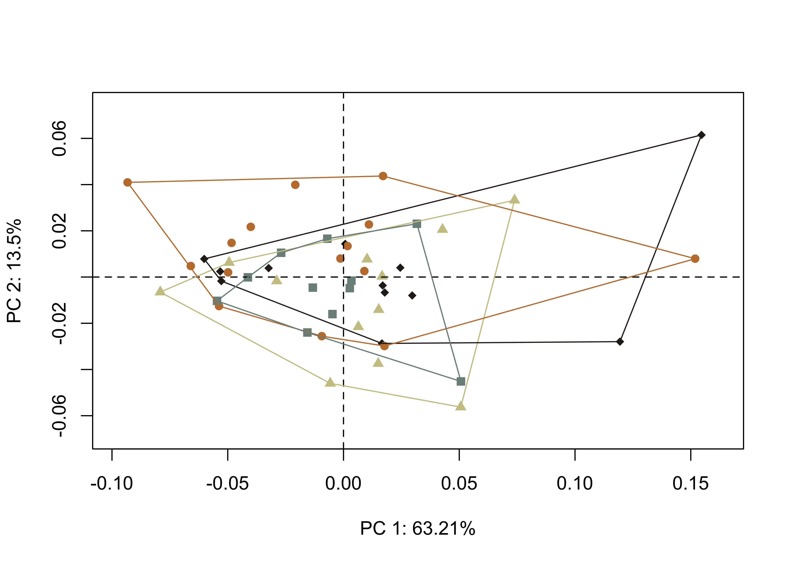
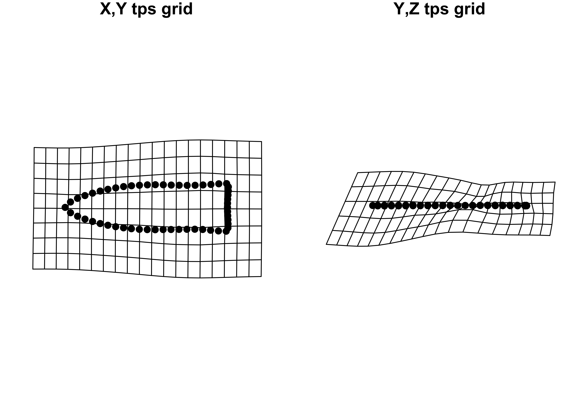
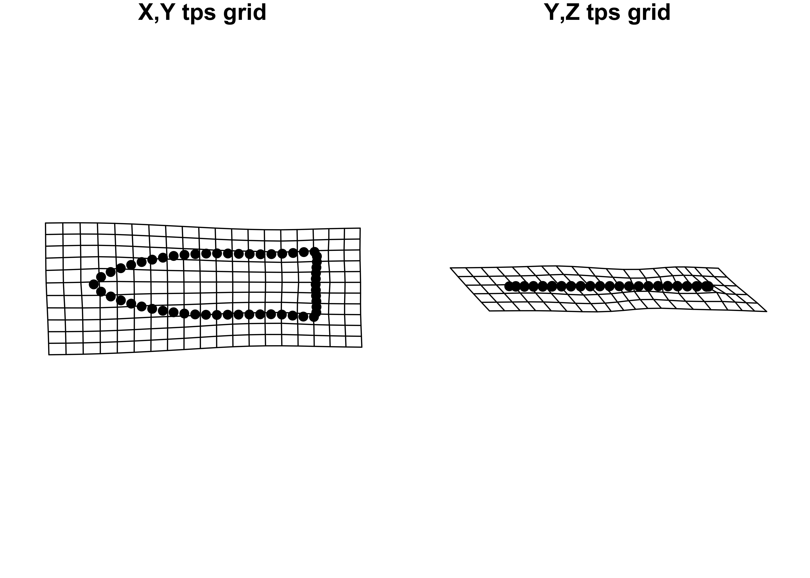
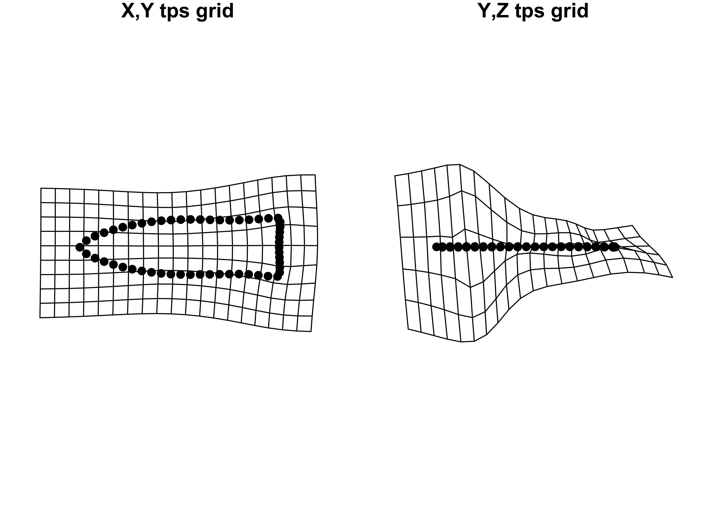
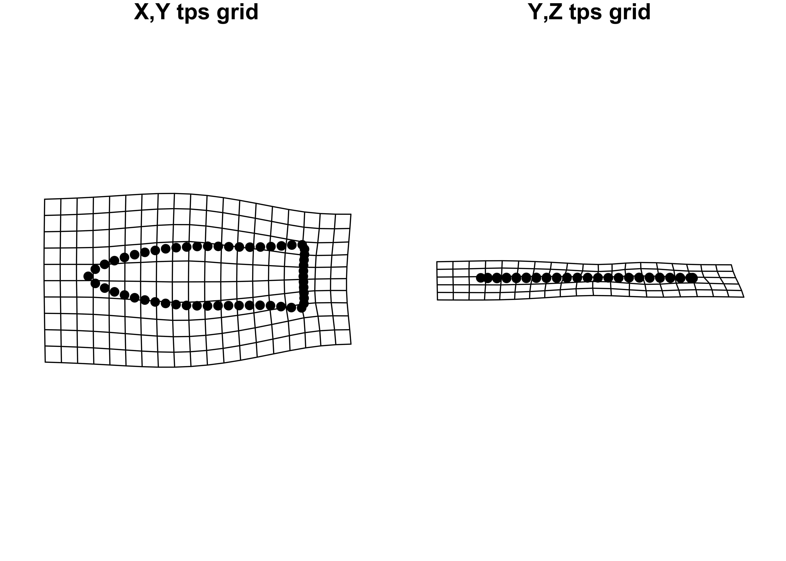

# do burial caches demonstrate the evolution of gahagan bifaces?
library(here)here() starts at /Users/seldenjrz/Documents/github/gahaganmorph.3/supplibrary(tidyverse)── Attaching core tidyverse packages ──────────────────────── tidyverse 2.0.0 ──
✔ dplyr 1.1.2 ✔ readr 2.1.4
✔ forcats 1.0.0 ✔ stringr 1.5.0
✔ ggplot2 3.4.2 ✔ tibble 3.2.1
✔ lubridate 1.9.2 ✔ tidyr 1.3.0
✔ purrr 1.0.1 ── Conflicts ────────────────────────────────────────── tidyverse_conflicts() ──
✖ dplyr::filter() masks stats::filter()
✖ dplyr::lag() masks stats::lag()
ℹ Use the conflicted package (<http://conflicted.r-lib.org/>) to force all conflicts to become errorslibrary(geomorph)Loading required package: RRPP
Loading required package: rgl
Loading required package: Matrix
Attaching package: 'Matrix'
The following objects are masked from 'package:tidyr':
expand, pack, unpacklibrary(tidyr)
library(ggplot2)
library(wesanderson)
library(plyr)------------------------------------------------------------------------------
You have loaded plyr after dplyr - this is likely to cause problems.
If you need functions from both plyr and dplyr, please load plyr first, then dplyr:
library(plyr); library(dplyr)
------------------------------------------------------------------------------
Attaching package: 'plyr'
The following objects are masked from 'package:dplyr':
arrange, count, desc, failwith, id, mutate, rename, summarise,
summarize
The following object is masked from 'package:purrr':
compact
The following object is masked from 'package:here':
heresource('readmulti.csv.R')
# read .csv files
setwd("./data3")
filelist <- list.files(pattern = ".csv")
coords <- readmulti.csv(filelist)
setwd("../")
# read/arrange categorical data
evolution <- read.csv("gahagancaches.csv",
header = TRUE,
row.names = 1)
evolution2 <- evolution %>%
unite("merged", c(trinomial, t.context), remove = FALSE)
evolution2 <- evolution2[match(dimnames(coords)[[3]], rownames(evolution)),]
# gpa ----
Y.gpa <- gpagen(coords,
PrinAxes = TRUE,
print.progress = FALSE)
## plot gpa
#plot(Y.gpa)
# geomorph data frame
gdf <- geomorph.data.frame(shape = Y.gpa$coords,
size = Y.gpa$Csize,
temporal = evolution2$merged)
# add centroid size to evolution
evolution2$csz <- Y.gpa$Csize
# palette
pal <- wes_palette("Moonrise2")
# principal components analysis ----
pca <- gm.prcomp(Y.gpa$coords)
summary(pca)
Ordination type: Principal Component Analysis
Centering by OLS mean
Orthogonal projection of OLS residuals
Number of observations: 50
Number of vectors 49
Importance of Components:
Comp1 Comp2 Comp3 Comp4
Eigenvalues 0.002599867 0.0005553329 0.0002691505 0.0001548898
Proportion of Variance 0.632055037 0.1350072889 0.0654333275 0.0376553480
Cumulative Proportion 0.632055037 0.7670623255 0.8324956530 0.8701510010
Comp5 Comp6 Comp7 Comp8
Eigenvalues 0.0001209178 9.317367e-05 7.243396e-05 5.194082e-05
Proportion of Variance 0.0293963851 2.265150e-02 1.760946e-02 1.262736e-02
Cumulative Proportion 0.8995473861 9.221989e-01 9.398083e-01 9.524357e-01
Comp9 Comp10 Comp11 Comp12
Eigenvalues 4.925642e-05 2.130257e-05 1.935836e-05 1.358642e-05
Proportion of Variance 1.197476e-02 5.178880e-03 4.706222e-03 3.303002e-03
Cumulative Proportion 9.644105e-01 9.695893e-01 9.742956e-01 9.775986e-01
Comp13 Comp14 Comp15 Comp16
Eigenvalues 1.161006e-05 1.006758e-05 8.298113e-06 6.860007e-06
Proportion of Variance 2.822527e-03 2.447535e-03 2.017359e-03 1.667740e-03
Cumulative Proportion 9.804211e-01 9.828686e-01 9.848860e-01 9.865537e-01
Comp17 Comp18 Comp19 Comp20
Eigenvalues 6.029793e-06 5.735786e-06 4.528965e-06 4.190261e-06
Proportion of Variance 1.465906e-03 1.394430e-03 1.101039e-03 1.018697e-03
Cumulative Proportion 9.880196e-01 9.894141e-01 9.905151e-01 9.915338e-01
Comp21 Comp22 Comp23 Comp24
Eigenvalues 3.290971e-06 3.235418e-06 2.807769e-06 2.489130e-06
Proportion of Variance 8.000697e-04 7.865642e-04 6.825983e-04 6.051337e-04
Cumulative Proportion 9.923339e-01 9.931204e-01 9.938030e-01 9.944082e-01
Comp25 Comp26 Comp27 Comp28
Eigenvalues 2.215830e-06 2.130585e-06 1.964133e-06 1.748636e-06
Proportion of Variance 5.386915e-04 5.179677e-04 4.775015e-04 4.251120e-04
Cumulative Proportion 9.949469e-01 9.954648e-01 9.959423e-01 9.963674e-01
Comp29 Comp30 Comp31 Comp32
Eigenvalues 1.458557e-06 1.379774e-06 1.306838e-06 1.204807e-06
Proportion of Variance 3.545906e-04 3.354376e-04 3.177061e-04 2.929014e-04
Cumulative Proportion 9.967220e-01 9.970575e-01 9.973752e-01 9.976681e-01
Comp33 Comp34 Comp35 Comp36
Eigenvalues 1.130775e-06 1.008837e-06 8.667652e-07 8.158458e-07
Proportion of Variance 2.749034e-04 2.452589e-04 2.107198e-04 1.983407e-04
Cumulative Proportion 9.979430e-01 9.981882e-01 9.983990e-01 9.985973e-01
Comp37 Comp38 Comp39 Comp40
Eigenvalues 7.428038e-07 6.838381e-07 5.940232e-07 5.297908e-07
Proportion of Variance 1.805834e-04 1.662483e-04 1.444133e-04 1.287977e-04
Cumulative Proportion 9.987779e-01 9.989441e-01 9.990885e-01 9.992173e-01
Comp41 Comp42 Comp43 Comp44
Eigenvalues 4.970685e-07 4.768485e-07 4.310014e-07 4.143536e-07
Proportion of Variance 1.208426e-04 1.159269e-04 1.047810e-04 1.007337e-04
Cumulative Proportion 9.993382e-01 9.994541e-01 9.995589e-01 9.996596e-01
Comp45 Comp46 Comp47 Comp48
Eigenvalues 3.518551e-07 3.293530e-07 2.868863e-07 2.343624e-07
Proportion of Variance 8.553969e-05 8.006920e-05 6.974509e-05 5.697596e-05
Cumulative Proportion 9.997452e-01 9.998252e-01 9.998950e-01 9.999520e-01
Comp49
Eigenvalues 1.976215e-07
Proportion of Variance 4.804387e-05
Cumulative Proportion 1.000000e+00# set plot parameters to plot by context
pch.gps.context <- c(15:18)[as.factor(evolution2$merged)]
col.gps.context <- pal[as.factor(evolution2$merged)]
col.hull.context <- c("#CCC591","#29211F","#C27D38","#798E87")
## plot pca by context 2
pc.plot <- plot(pca, asp = 1,
pch = pch.gps.context,
col = col.gps.context)
shapeHulls(pc.plot,
groups = evolution2$merged,
group.cols = col.hull.context)
# plot x/y maxima/minima
## x - minima
mean.shape <- mshape(Y.gpa$coords)
plotRefToTarget(pca$shapes$shapes.comp1$min,
mean.shape)
## x - maxima
plotRefToTarget(pca$shapes$shapes.comp1$max,
mean.shape)
## y - minima
plotRefToTarget(pca$shapes$shapes.comp2$min,
mean.shape)
## y - maxima
plotRefToTarget(pca$shapes$shapes.comp2$max,
mean.shape)
# ANOVAs ----
# MODEL: shape as a function of context
fit.shape.context <- procD.lm(shape ~ temporal,
data = gdf,
print.progress = FALSE,
iter = 9999)
# ANOVA: do gahagan biface shapes differ by context?
anova(fit.shape.context)
Analysis of Variance, using Residual Randomization
Permutation procedure: Randomization of null model residuals
Number of permutations: 10000
Estimation method: Ordinary Least Squares
Sums of Squares and Cross-products: Type I
Effect sizes (Z) based on F distributions
Df SS MS Rsq F Z Pr(>F)
temporal 3 0.011196 0.0037321 0.05555 0.9019 0.025804 0.4887
Residuals 46 0.190358 0.0041382 0.94445
Total 49 0.201554
Call: procD.lm(f1 = shape ~ temporal, iter = 9999, data = gdf, print.progress = FALSE)# MODEL: size as a function of context
fit.size.context <- procD.lm(size ~ temporal,
data = gdf,
print.progress = FALSE,
iter = 9999)
# ANOVA: do gahagan biface sizes differ by context?
anova(fit.size.context)
Analysis of Variance, using Residual Randomization
Permutation procedure: Randomization of null model residuals
Number of permutations: 10000
Estimation method: Ordinary Least Squares
Sums of Squares and Cross-products: Type I
Effect sizes (Z) based on F distributions
Df SS MS Rsq F Z Pr(>F)
temporal 3 106559 35520 0.22152 4.3631 2.3785 0.0093 **
Residuals 46 374485 8141 0.77848
Total 49 481044
---
Signif. codes: 0 '***' 0.001 '**' 0.01 '*' 0.05 '.' 0.1 ' ' 1
Call: procD.lm(f1 = size ~ temporal, iter = 9999, data = gdf, print.progress = FALSE)# pairwise comparison of LS means = which differ?
sz.context <- pairwise(fit.size.context,
groups = evolution2$merged)
summary(sz.context,
confidence = 0.95,
test.type = "dist")
Pairwise comparisons
Groups: 16RR1_initial 16RR1_subsequent 41CE19_initial 41CE19_subsequent
RRPP: 10000 permutations
LS means:
Vectors hidden (use show.vectors = TRUE to view)
Pairwise distances between means, plus statistics
d UCL (95%) Z Pr > d
16RR1_initial:16RR1_subsequent 17.42651 76.23526 -0.4292897 0.6593
16RR1_initial:41CE19_initial 11.51217 79.11822 -0.8247431 0.7805
16RR1_initial:41CE19_subsequent 108.38193 81.63485 2.1492188 0.0076
16RR1_subsequent:41CE19_initial 28.93868 74.90167 0.1608093 0.4519
16RR1_subsequent:41CE19_subsequent 90.95542 74.15611 1.9708020 0.0152
41CE19_initial:41CE19_subsequent 119.89410 78.86087 2.4326933 0.0022# morphological disparity ----
# morphological disparity by size
morphol.disparity(fit.size.context,
groups = evolution2$merged,
data = gdf,
print.progress = FALSE,
iter = 9999)
Call:
morphol.disparity(f1 = fit.size.context, groups = evolution2$merged,
iter = 9999, data = gdf, print.progress = FALSE)
Randomized Residual Permutation Procedure Used
10000 Permutations
Procrustes variances for defined groups
16RR1_initial 16RR1_subsequent 41CE19_initial 41CE19_subsequent
6982.348 3906.382 2544.620 17378.985
Pairwise absolute differences between variances
16RR1_initial 16RR1_subsequent 41CE19_initial
16RR1_initial 0.000 3075.967 4437.729
16RR1_subsequent 3075.967 0.000 1361.762
41CE19_initial 4437.729 1361.762 0.000
41CE19_subsequent 10396.636 13472.603 14834.365
41CE19_subsequent
16RR1_initial 10396.64
16RR1_subsequent 13472.60
41CE19_initial 14834.37
41CE19_subsequent 0.00
P-Values
16RR1_initial 16RR1_subsequent 41CE19_initial
16RR1_initial 1.0000 0.5059 0.3570
16RR1_subsequent 0.5059 1.0000 0.7600
41CE19_initial 0.3570 0.7600 1.0000
41CE19_subsequent 0.0219 0.0008 0.0004
41CE19_subsequent
16RR1_initial 0.0219
16RR1_subsequent 0.0008
41CE19_initial 0.0004
41CE19_subsequent 1.0000